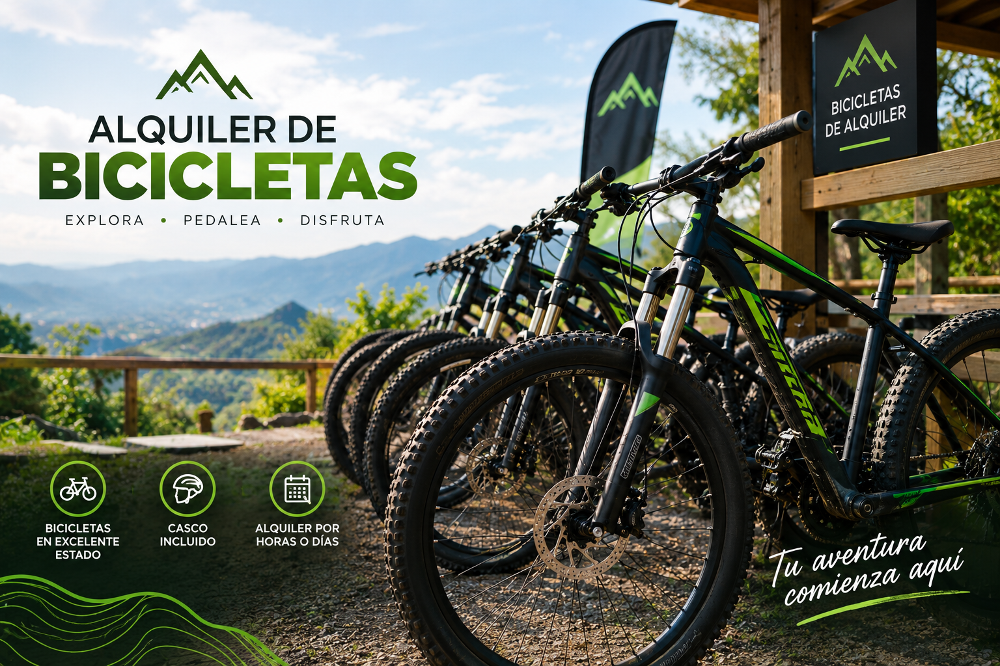
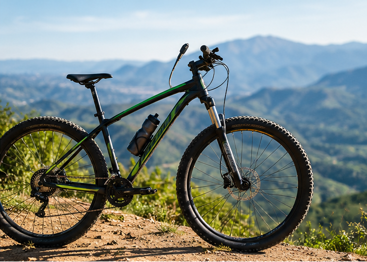
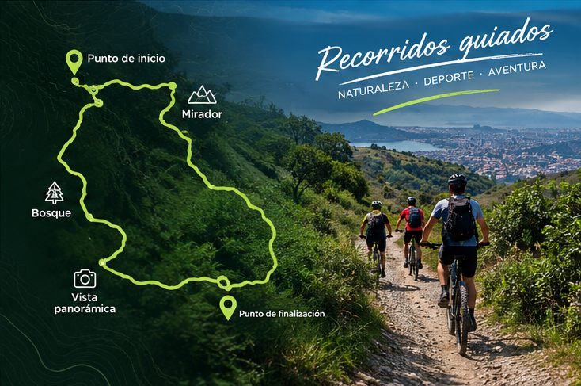
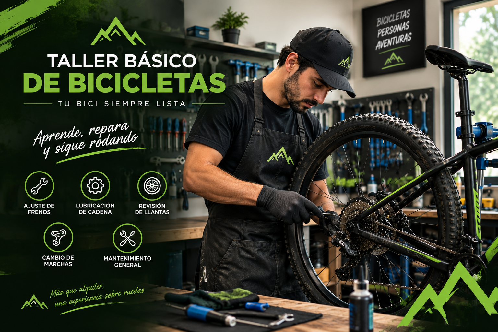

Alquiler de bicicletas
Contamos con una flota moderna de bicicletas urbanas y de montaña para que recorras la ciudad a tu propio ritmo, ya sea por horas o por días completos.

Consulta las tarifas acáBienvenido al mejor alquiler de bicicletas de la ciudad

Somos una empresa paisa apasionada por la movilidad sostenible, el deporte y el turismo urbano. En Rueda Libre conectamos a locales y visitantes con los mejores espacios de Medellín a través de bicicletas seguras, cómodas y listas para rodar, promoviendo un estilo de vida saludable y amigable con el medio ambiente.
Contamos con una flota moderna de bicicletas urbanas y de montaña para que recorras la ciudad a tu propio ritmo, ya sea por horas o por días completos.

Consulta las tarifas acáDisfruta de nuestros tours guiados donde descubrirás la historia, el arte urbano y los rincones más emblemáticos de Medellín de manera segura.

Consulta los recorridos acáOfrecemos servicio de mantenimiento preventivo, ajuste de frenos y cambios para que tu bicicleta siempre ruede en óptimas condiciones.

Sigue estos pasos para poder alquilar una bicicleta: